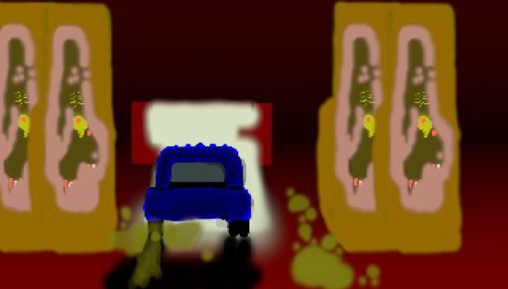
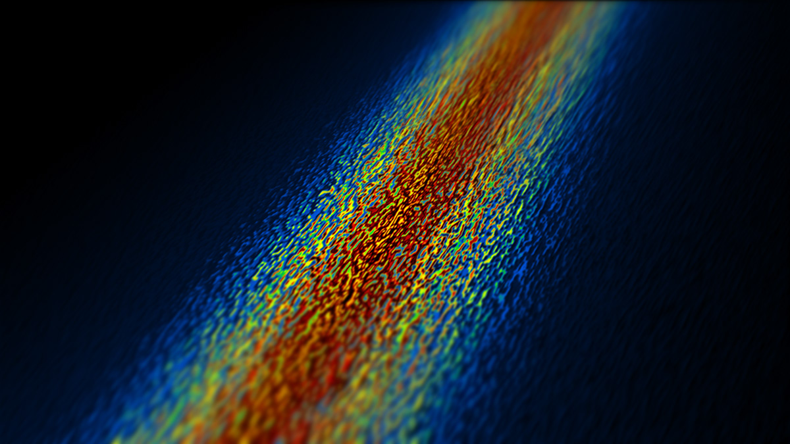
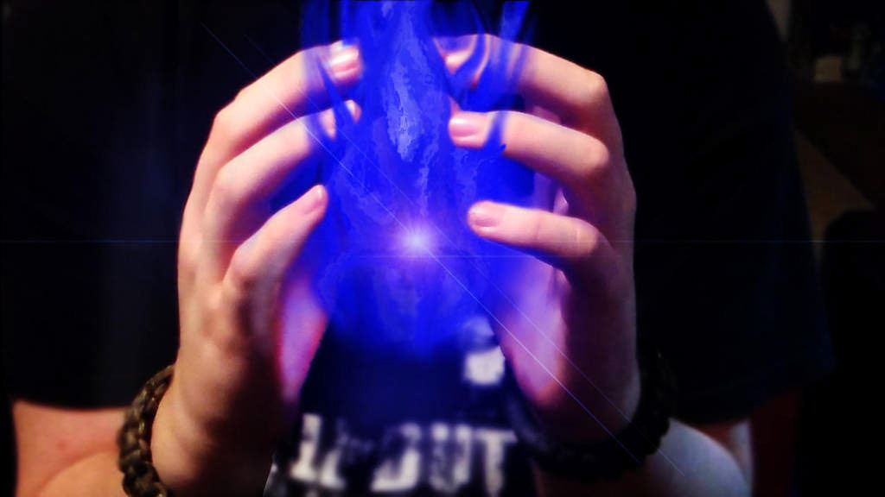
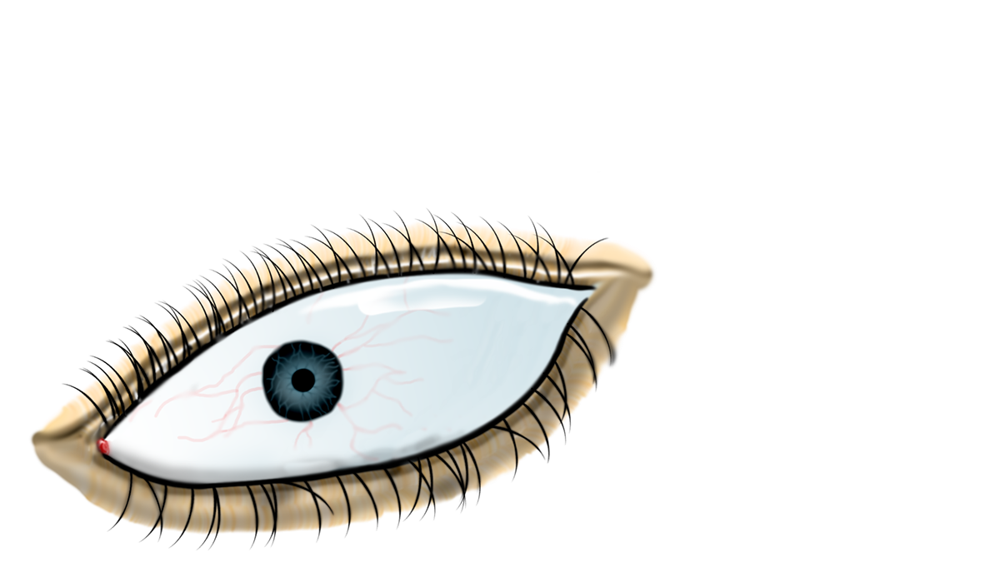
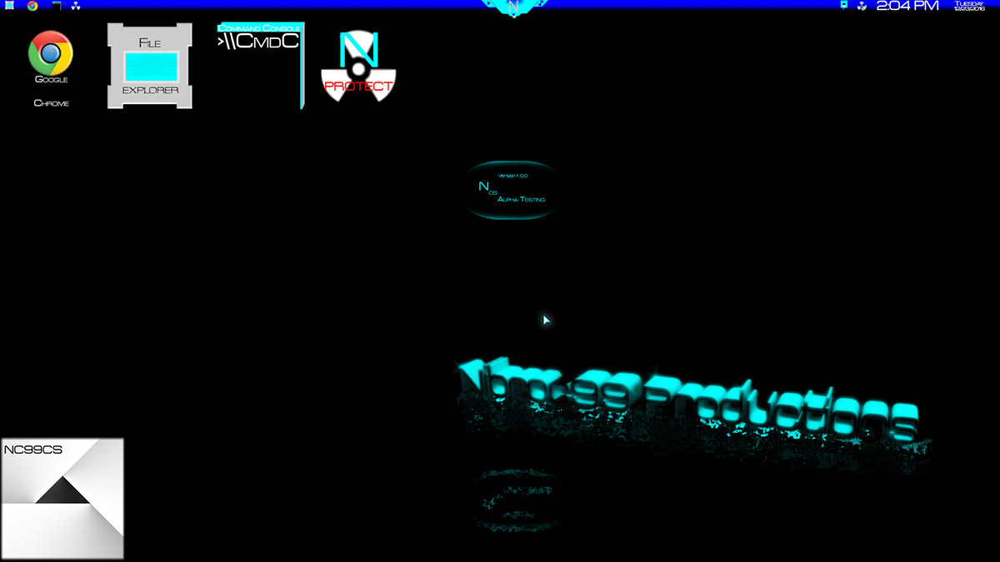
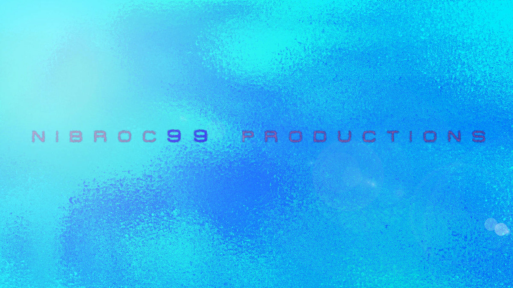
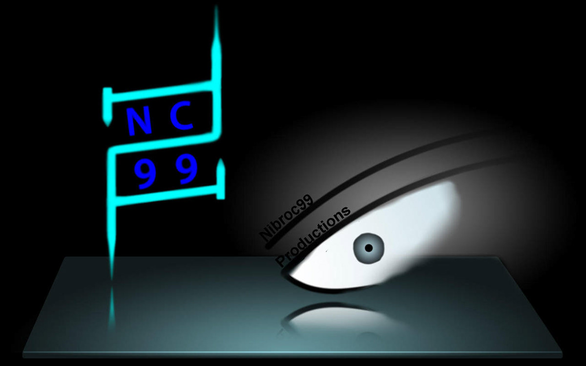

Corbin Blanchard
Student Graphic Designer
Who is this Corbin guy, anyway?
This is an informal, personal history of how I came to be interested in graphic design. If you are looking to find a more formal description of my abilities, feel free to view the most recently updated version of my resume here, or feel free to get in touch with me if you have any questions, business inquiries, etc. by clicking here.
An Eagle Scout, a collegiate graphic design student,
a VFX hobbyist, and
a Windows power user... That's who I am.
Believe it or not, it all started with Mr. Rogers, the children's television show, in an episode where Mr. Rogers was sketching something. I was about 7 or 8 years old, and when I saw him sketching using lots of small lines to create shapes rather than one continuous line, I was hooked - I had to try drawing like that. When I started drawing I just couldn't stop, which led to sketchbooks full of silly alien drawings and made-up Pokemon characters. Around the same time, my dad brought home Photoshop and taught me how to use it to draw on the computer. I made all sorts of little drawings and photo effects - below are just a few examples.




×

Above: Images that I created/manipulated when I was 8-12 years old
Later I began to make a brand for myself, called "Nibroc99 Productions." I made two logos for myself at age 10, and by the time I was 11 I was beginning to get into making youtube videos made in After Effects - primarily videos dealing with simple visual effects, like fire coming from my hands or muzzle flare from my Nerf guns. The most popular videos that I have are my music mixes, in which I took an hour's worth of songs from the Dubstep genre, mixed and beat matched using Adobe Soundbooth and Audition when that came out, and made a whole video out of them using After Effects. I had lots of fun with making the intros to each one, seen in the first minute or so of each video.
Here is a link to my old dubstep mixes on YouTube, and below
are a few images that I made related to the brand I created.



×